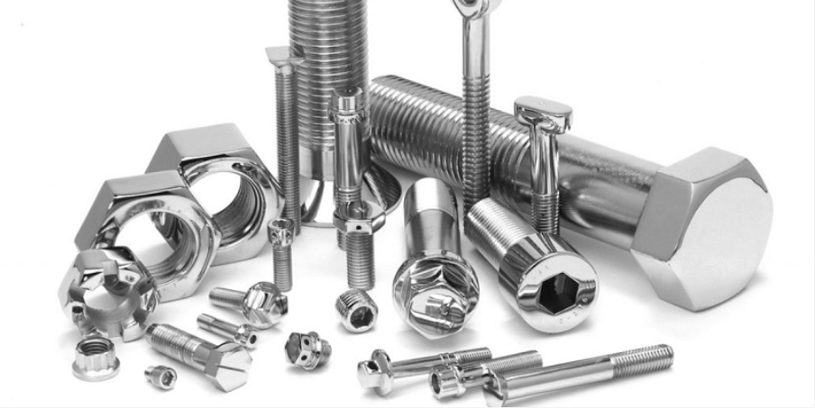
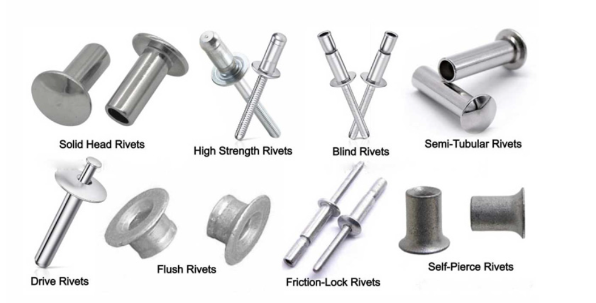
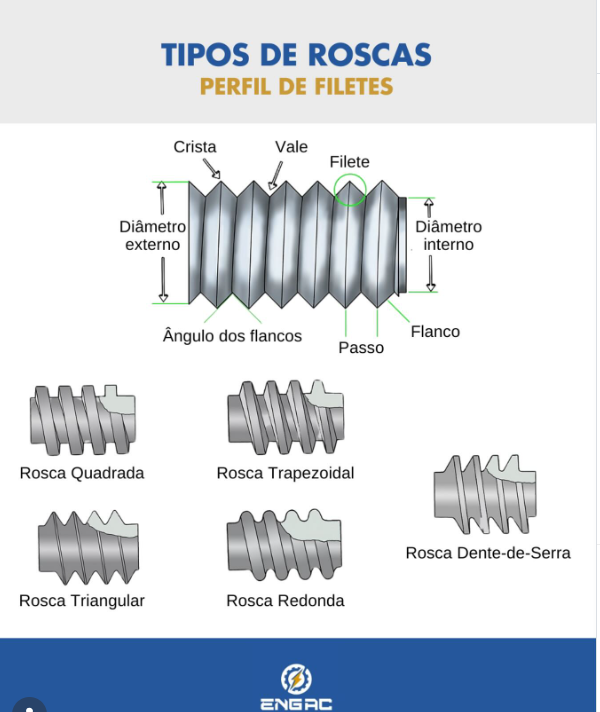
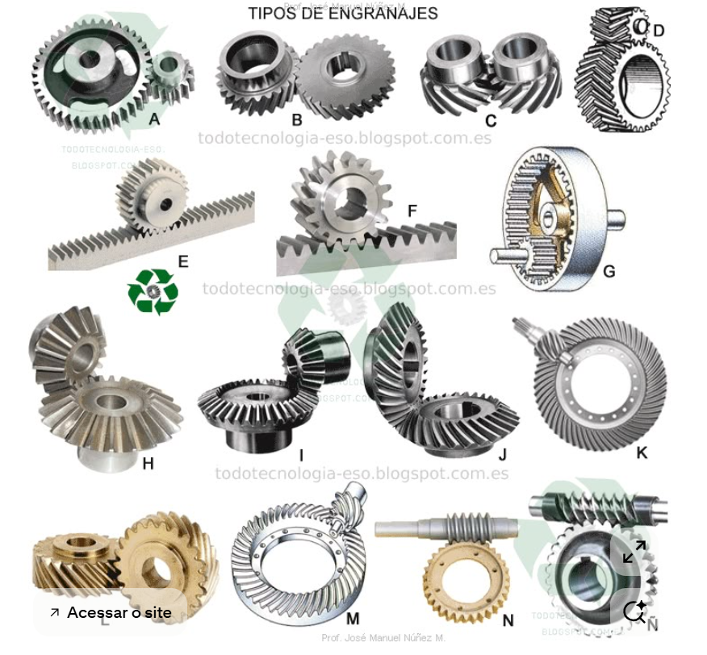
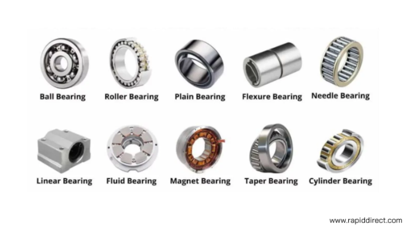

Nada é Perfeito (Infelizmente)
Na mecânica, a perfeição é cara e impossível. Por isso, toda peça tem uma Tolerância: a variação aceitável entre o tamanho máximo e o mínimo. Se sair disso, é sucata!
FUROS são sempre
MAIÚSCULOS
EIXOS são sempre
minúsculos
Qual a sua precisão?
Escolha o grupo de tolerância para ver onde ele é usado:
Extra Precisa (IT 01 a IT 06)
Usada em calibradores, blocos padrão e instrumentos de alta precisão. Aqui o erro é quase zero!
Elementos de Fixação
A arte de manter as coisas no lugar (ou não).
Família dos Parafusos
Se você montou e pode desmontar sem quebrar nada, é aqui! Essencial para manutenção.

- ✅ Parafusos e Porcas
- ✅ Arruelas
- ✅ Chavetas e Pinos
Os Inseparáveis
Depois de colocado, só sai na base da furadeira ou lixadeira. Segurança total!

- 🔥 Soldagem
- 🔨 Rebites
- 🔗 Colagem Industrial
Métrica vs. Inglesa (Withworth)
Cuidado para não tentar rosquear um parafuso em polegada num furo métrico, ou você vai ver a rosca sumindo!
Métrica: Ângulo de 60°. Medida em milímetros (ex: M10).
Inglesa: Ângulo de 55°. Medida em polegadas (ex: 3/8").

Transmissão e Apoio
O que faz a máquina rodar sem "gritar".
Engrenagens
Usadas para transmitir torque e rotação. Os tipos mudam conforme o esforço e o barulho!

Rolamentos
A função principal é reduzir o atrito e suportar a carga do eixo.
